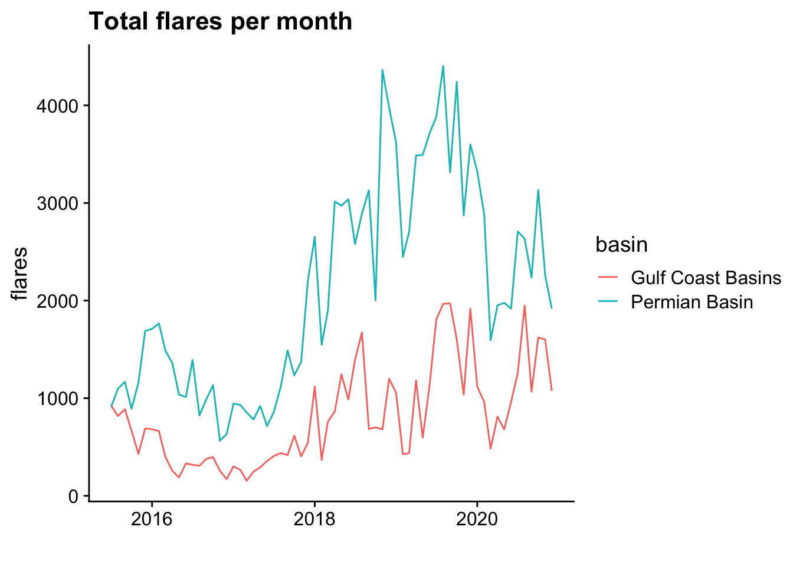
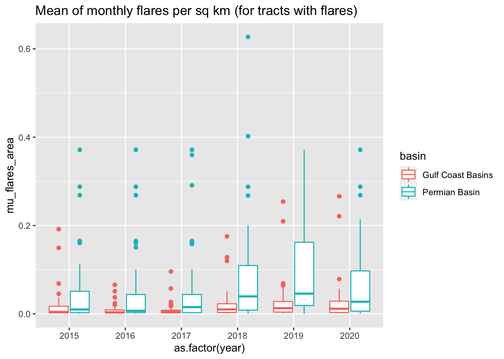
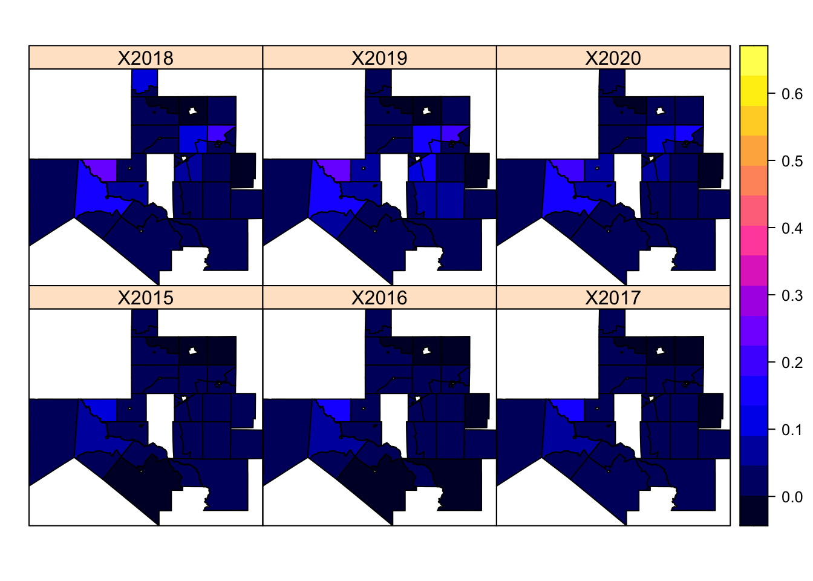
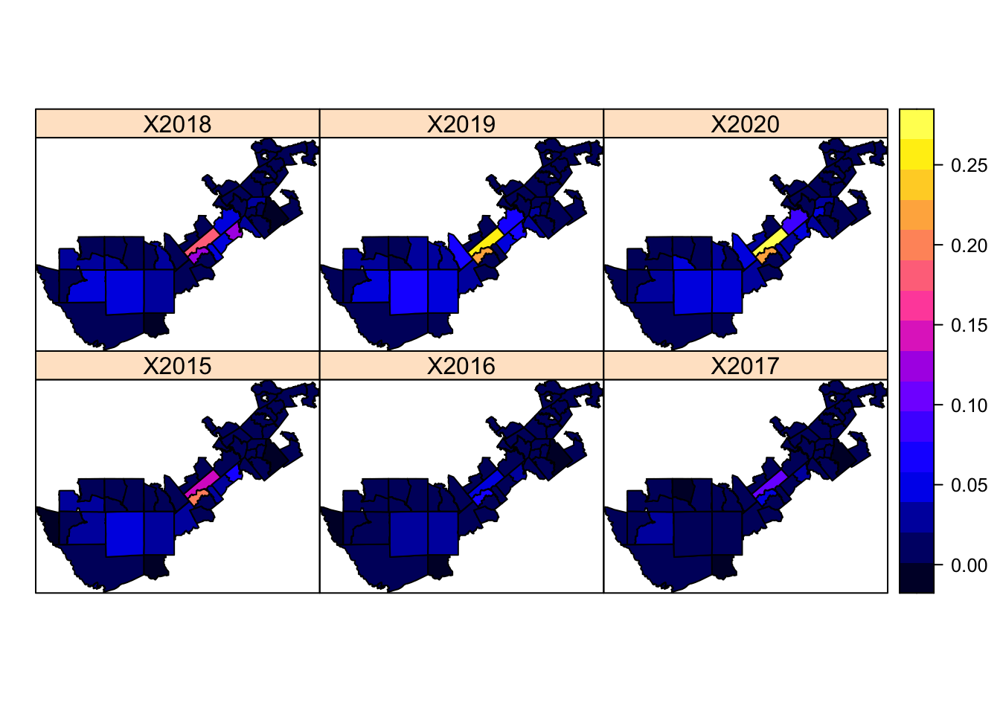

1
Flares Texas
2
Preprocess data
3
Flares
4
Parcels checkpoint
4.1
check 1
4.2
check 2
4.3
check 3
4.3.1
Group 1
4.3.2
Group 2
4.4
check 4
5
links checkpoint
5.1
check 1
5.2
check 2
5.3
check 3
6
Hyads
6.1
2017 Monthly Hyads
6.2
Unweighted 2017 Monthly Hyads
6.3
Weighted 2017 Monthly Hyads
6.4
Yearly Hyads
6.5
Unweighted Yearly Hyads
6.6
Weighted Yearly Hyads
Flares Texas
3
Flares


Permian Basin area normalized flares per sq km

Gulf Coast Basins area normalized flares per sq km
